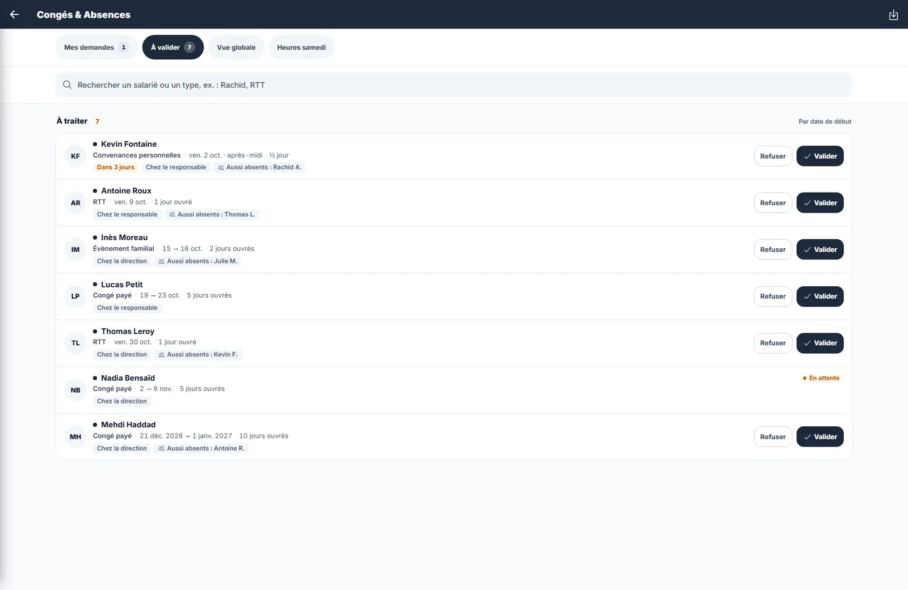
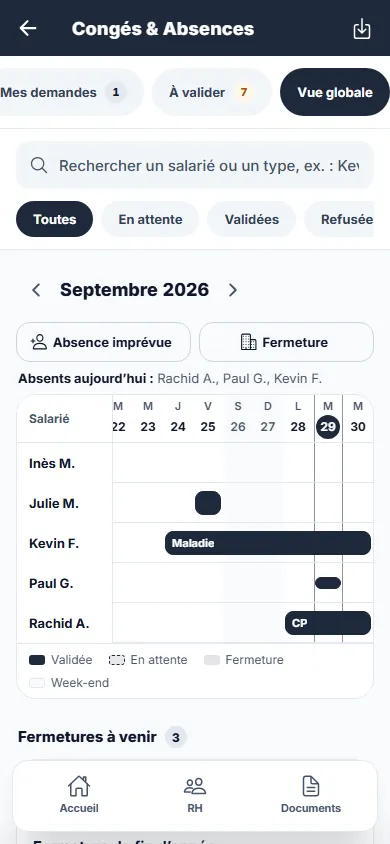

Work2026
BTP-360
The app that replaced the Excel files of four building companies.
- Setting
- Final-year internship, lead developer
- Where
- Iso Sûr France, Troyes
- Period
- March to October 2026
- Team
- Solo, with management and field teams
- My role
- Design, development, deployment
Private code, owned by the company. Demo on request.

In short
- The problem
- Four companies ran HR, sites and finance on Excel files sent by email.
- My part
- All of it, solo: design, a web and Android app that works offline, API, database, deployment.
- The result
- In production on AWS. 380 commits, 255 unit test files, 54 end-to-end suites.
Context
Iso Sûr France and its three sister companies (Climat, Réseau and Distri Sûr France) work in construction. HR, contracts, logistics, finance, sites, scheduling, time tracking: everything went through Excel files sent by email.
Team leads clocked in on paper, contracts were copied from a Word template, and nobody really knew which tool was on which site.
The problem
The brief asked for one app, opened from a plain link on a PC or a phone, that works offline: in a basement or on a building site there is often no signal.
The stack was set by the company: Angular, NestJS, Prisma and PostgreSQL, none of which I had used before. I learned them during the internship.
What I built



HR and contracts
Contracts generated as PDF and DOCX from templates (construction pay grid, collective agreement), employee files, two-step leave approval, certifications with an alert before they expire.
On site
Geolocated clock-in and clock-out on site, one QR code per tool, tool hand-overs signed on screen by the employee, receipts read by OCR on the phone, even offline.
Leave and scheduling
Daily, weekly or monthly calendar, leave requests sent from the phone, real-time notifications.
Documents and purchasing
Documents filed by company and by site, files to renew flagged, and purchase requests approved by management.
Technical decisions
- A queue for offline work
- Any write made without a network is caught by an HTTP interceptor, kept on the device and shown straight away. When the network comes back, the queue is replayed in order, with an idempotency key so the same action never counts twice. After six failures, the action is marked “to check”. Conflicts are rare by design: each action belongs to the employee who makes it.
- OCR that never leaves the device
- Receipts are read with no online service: Google ML Kit on Android, PaddleOCR in the browser, Tesseract.js on the server. Only confident fields are prefilled, and a check makes sure net + VAT = gross. CI fails if a remote OCR service ever comes back into the code.
- Five roles, encrypted data
- Admin, office, project manager, storekeeper, field: each role only sees its own scope. Social security numbers and salaries are encrypted with AES-256-GCM, and the API refuses to start without a real key. When someone leaves, their file is archived instead of deleted.
- The simplest thing that holds
- One EC2 instance in the Paris region with Docker Compose, sized for an MVP, rather than ECS or Kubernetes. Terraform to rebuild everything, GitHub Actions to deploy, Sentry for errors, and every night an encrypted PostgreSQL backup sent to S3, away from the server. I restored that backup to make sure it works.
- AI agents on a leash
- Every task starts with a written spec. One agent implements it, a second reviews the diff against the spec, and the tests must pass before any merge. Claude Code handled the front end and business logic, Codex the back end and security. A rule from day one: if the agent cannot explain its logic to me, the feature is not accepted.
On site
- Android app
- PWA in the office
- Offline queue
Client
- Ionic 8 + Angular 20
- NgRx
- Capacitor
- Local OCR
API
- NestJS 11
- Socket.IO
- JWT + 5 roles
- Swagger
Data
- PostgreSQL 16
- Prisma 7
- AES-256-GCM
Infrastructure
- AWS EC2 (Paris) + S3
- Docker Compose
- Terraform
- GitHub Actions
- Sentry
The result
- 4companies in a single app
- 380commits
- 47data models
- 255unit test files
- 54end-to-end test suites
The app is in production on AWS, on the web and on Android. Receipt OCR, the hardest part, shipped complete and on time, not as a beta.
What I took away
One day an agent added a feature I had not asked for: an e-signature for every document added to an employee’s file. I caught it while reviewing the diff. Too heavy, and against the logic: a notification was enough. I removed it (30 files, about 3,800 lines gone) and kept signatures where they make sense, when the storekeeper hands over tools.
Alone on a project this size, you have to write everything down: the documentation, the decisions, the tests. That is what let me move fast without breaking what already worked.
Stack
- Ionic 8
- Angular 20
- NgRx
- Capacitor
- NestJS 11
- Prisma 7
- PostgreSQL 16
- Socket.IO
- Docker
- Terraform
- AWS
- GitHub Actions
- Playwright
- Sentry